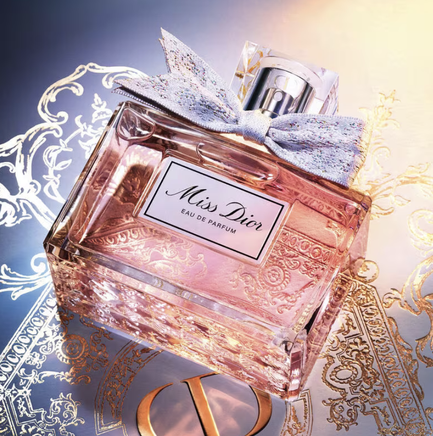
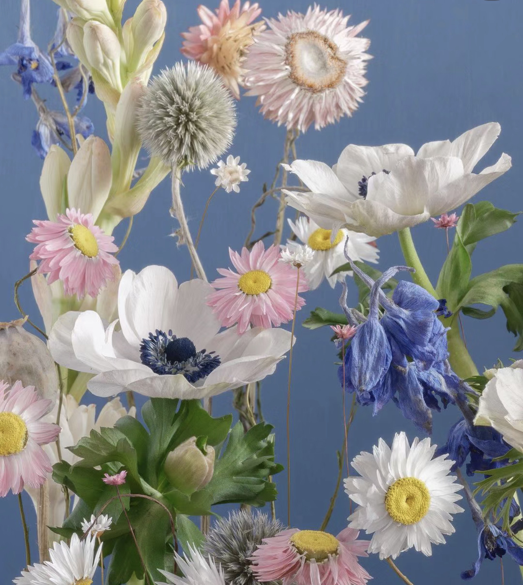
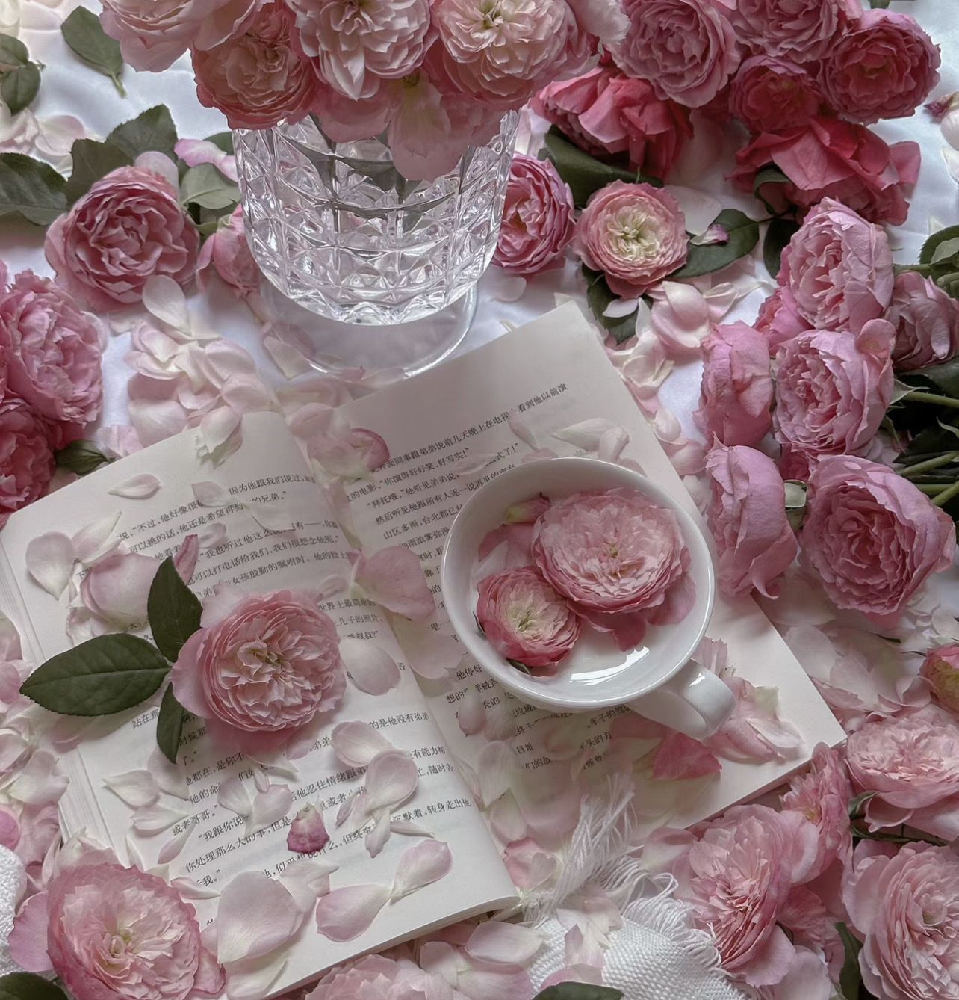

Miss Dior Eau de Parfum
Dior
DETAILS
In 1947, Miss Dior was born out of a wild impetus where the pressing desire to re-enchant women's lives and open up their eyes to the sparkling colors of love again was felt. Following a bleak period, this scent was synonymous with renewed happiness, poetry, and harmony for Christian Dior at that time. Miss Dior intrigues, excites and invites us to marvel at love and all the beauty in the world.
Echoing its inspiring character, the new Miss Dior fragrance is like an olfactory “millefiori”. Centifolia Rose, with its honeyed and peppery notes, reigns over a delectably creamy velvet heart. It is embroidered with fresh Lily-of-the-Valley notes, an apricot-tinged Peony accord, and powdery Iris notes. Miss Dior is thus built around an elegant, striking bouquet––like a “millefiori” that seems to carry countless flowers in endless colors. At the base, slight notes of tender wood envelop the composition.
The new Miss Dior Eau de Parfum now boasts a vibrant, pointillist couture, poignard fabric bow, with a truly unique assortment of florals. As such, a few centimeters of pure luxury is tied around the bottle's neck. Beneath the bottle, the emblematic Miss Dior houndstooth motif is engraved in the glass.
ABOUT THE FRAGRANCE:
FLORAL BOUQUET
The floral freshness of Lily-of-the-Valley notes, an expressive Peony accord, and caressing Iris notes are accompanied by a slightly dewy, verdant quality.
CENTIFOLIA ROSE
A delectably creamy, lush, and velvety Rose, around which an armful of flowers resembling a “millefiori” come alive.;


